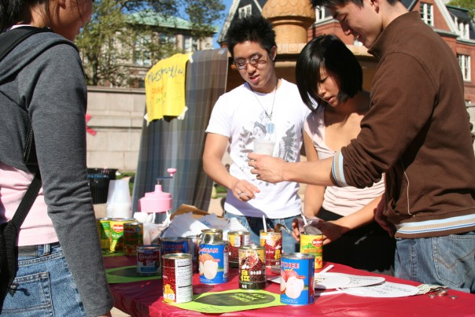

What's great about CJS MATSURI is that not only can you learn about Japanese culture, but you can also learn about other cultures! Lots of Columbia Universities finest cultural clubs are participating with festival games of their own! Get a glimpse of CU students' cultural club life.
Some pictures from previous years...
